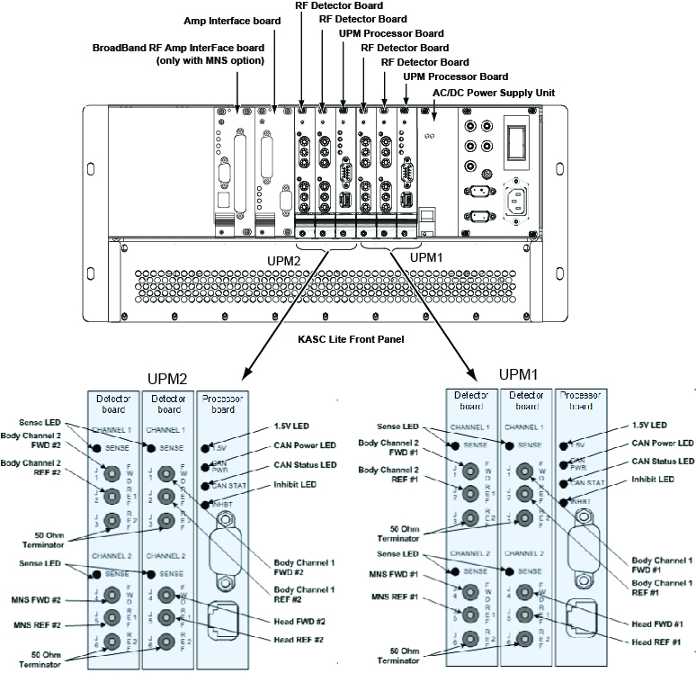
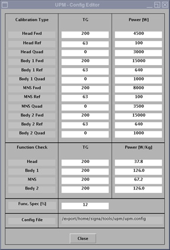
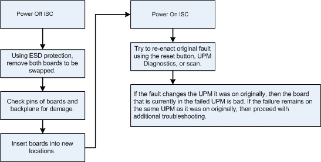

- 00000018WIA30E01E20GYZ
- id_131063985.0
- Feb 21, 2021 9:08:02 PM
Universal Power Monitor (UPM) Troubleshooting
Overview
Each system contains two UPMs, where UPM refers to one RF processor board working in conjunction with two RF detector boards.
These UPMs are identical and boards can be swapped to help with troubleshooting. See UPM Board Swap Procedure for details.

| LED Name | Description |
| Sense |
If ON, the RF detector board is detecting RF input signal into one of the three ports on that channel. If OFF, no signal is detected on that channel. |
| 1.5 V | If ON, the processor board indicates it is receiving 3.3 V from the CAM power supply and generating 1.5 V. Check for voltage at 3.3 V test points on front of CAM. |
| CAN Power | If ON, 24 V from the driver module CAN power supply is detected. This voltage is provided through the CAN backplane connection. This LED can be ON even if the UPM is powered down. |
| CAN Status | If the CAN status blinks once, then the processor board is attempting to communicate with the MGD host. If the LED blinks twice, then the processor board is communicating with the MGD host. If LED remains OFF, then the processor board is not attempting communication with the host. |
| Inhibit | If ON, the UPM has detected a disconnected FWD, REF 1, or REF 2 cable or system unblank signal interrupted, as result of a hardware failure or other unsafe condition, and scanning is inhibited. The LED will remain ON until the fault is cleared. Check the error log for fault details. For excessive power faults, the LED will clear once the power level is less than 99% of the trip limit. |
The detector board measures forward and reflected power. All RF detector boards in a system are identical. There are four RF detector boards (two boards for each UPM). These boards convert measured RF power into a digital signal that is sent to the processor boards. Each board has two channels and each channel has one to three RF input ports. See details in Table 2.
| Slot | Channel Assignment | Narrow Band RF Detector Port Usage |
| S11 / S14 | Channel 1 FWD | Body Channel 1 Forward |
| Channel 1 REF 1 | Body Channel 1 Reflected | |
| Channel 1 REF 2 | Not used | |
| Channel 2 FWD | Head Forward | |
| Channel 2 REF 1 | Head Reflected | |
| Channel 2 REF 2 | Not used | |
| S10 / S13 | Channel 1 FWD | Body Channel 2 Forward |
| Channel 1 REF 1 | Body Channel 2 Reflected | |
| Channel 1 REF 2 | Not used | |
| Channel 2 FWD | Not used | |
| Channel 2 REF 1 | Not used | |
| Channel 2 REF 2 | Not used |
On the front panel of the CAM chassis, the power supply provides 3.3 V, 5.0 V, +12 V and -12 V to the processor and detector boards. The ASC reset button resets both UPMs; however, any measured RF power from the scanner is NOT reset. The voltage banana jacks are for checks of the power supply for the entire CAM.
The following reference documents can assist with troubleshooting the UPM:
Diagnostics for UPM
UPM diagnostics are accessed from the Common Service Desktop (CSD). See UPM Diagnostics.
UPM Calibration
The UPM calibration runs an APB cal scan and adjusts digital attenuators internal to the UPM to match the expected RF signal level (see UPM Calibration and UPM Functional Check–Body Mode and UPM Calibration and UPM Functional Check–Head Mode).
The UPM calibration parameters found in the UPM configuration file (/export/home/signa/tools/upm/upm.config) are used in the calibration/functional check tasks. This configuration file is accessible from the UPM Calibration tool, by selecting File > View Config. These values can be used during troubleshooting to help determine where the power monitor is tripping (if at all).
The UPM configuration file contains the default configuration values for all of the UPM parameters. The values displayed below are for reference only, because the content and values differ depending on system type.
Although this screen is called UPM Config Editor, the displayed values cannot be changed; they can only be viewed.

The final UPM digital attenuator values are written to the UPM calibration configuration files (Upm1Cal.cfg, Upm2Cal.cfg) located in directory /w/config. The contents of Upm1Cal.cfg and Upm2Cal.cfg are 12 hexadecimal attenuation values listed in single column order and identified as follows:
-
Head FORWARD Power
-
Head REFLECTED Power
-
Head Quad Hybrid Reflected Power (not used)
-
Body Ch 1 FORWARD Power
-
Body Ch 1 REFLECTED Power
-
Body Ch 1 Quad Hybrid Reflected Power (not used)
-
MNS FORWARD Power (not used)
-
MNS REFLECTED Power (not used)
-
MNS Quad Hybrid Reflected Power (not used)
-
Body Ch 2 FORWARD Power
-
Body Ch 2 REFLECTED Power
-
Body Ch 2 Quad Hybrid Reflected Power (not used)
UPM Functional Check
The UPM functional check runs a prescribed scan in the selected RF chain. It compares the measured RF power from the UPM to the expected value in a config file. If the values do not fall within 12%, the functional check fails. In addition, the functional check confirms that the UPM will stop scanning if the RF measured exceeds the trip limit. (See UPM Calibration and UPM Functional Check–Body Mode and UPM Calibration and UPM Functional Check–Head Mode.)
If the functional check fails to run, first check the system error log. See UPM Fault Messages to troubleshoot UPM system errors.
If the functional check fails due to inaccurate power measurement, first re-calibrate the UPM, and then attempt the functional check again.
Troubleshooting Potential UPM Problems
The following is a list of potential UPM problems.
-
Problem: UPM calibration fails.
Issue: Head and body RF power are not correct; or bad UPM detector board or bad UPM processor board; or cabling not correct.
Solution: If the UPM calibration fails, check the system error log. Use the Problem/Solution list in UPM Fault Messages to troubleshoot the errors in the error log. If UPM Fault Messages does not solve the calibration errors, attempt the following steps:
Warning -
Quit the UPM Calibration tool, end any open exams, and perform a TPS reset.
-
Open a new exam with Patient ID: geservice and weight: 111.
-
Select Service, Other.
-
Select apb cal (series 1 if troubleshooting body and series 2 if troubleshooting head).
-
Select Save Series.
-
Confirm that the correct hardware setup exists (cables connections and dummy load connections match the setup shown in the documentation).
-
Click Manual Prescan.
-
If you are troubleshooting UPM reflected power calibration, change TG to 63. If you are troubleshooting UPM forward power calibration, set TG above 149.
-
Click Scan TR.
-
Check for Inhibit light on CAM chassis, driver module.
-
Check for Sense LEDs flashing on the correct channel (both RF detector boards should have one of the channel’s Sense LEDs flashing, matching the channel you are troubleshooting).
-
Exit manual prescan.
The system must be able to scan with the correct UPM Sense LEDs flashing before running the calibration. If the Sense LEDs are not flashing, check the error log to determine if the scan was stopped. Also check that the hardware setup is correct.
If the setup and system are good but the Sense lights are not flashing, make sure RF is getting to the UPM by placing a 50 ohm terminator in the port you are troubleshooting and the UPM RF cable into a 50 ohm terminated scope. Make sure you see a RF signal. If no signal exists, attempt reading at various points along the cable path to determine where the signal is lost. If a signal exists, attempt swapping/replacing RF detector boards. See UPM Board Swap Procedure.
Note: Sometimes calibration fails due to an RF amplifier excessive peak power fault. Check the setup and condition of the test equipment and RF cable connections at every component. Also confirm that the RF amplifier power calibration was performed according to the documented service procedure.Note: If the UPM reports a short or long term average power fault (ERROR 2254783), launch the RF amp calibration procedure through the UPM Tool, adjust TG to suggested values above, and observe Inhibit and Sense LEDs as indicated above. -
-
Problem: Config file CRC mismatch.
The following error message appears when starting a UPM Tool task or viewing the UPM Tool configuration file.
Figure 3. UPM Error Message 
Issue: The calculated checksum value for upm.config configuration file does not match the checksum at end of file. upm.config file contents were edited or corrupted.
Solution: Copy default UPM configuration file (/usr/g/tools/upm/upm.config.3.0T.XRMW) to UPM Tool configuration file (/usr/g/tools/upm/upm.config). After you replace the configuration file, you must do a full UPM calibration and functional test on the system.
-
Problem: RF amplifier does not output power during RF amplifier or UPM calibration.
Power meter does not read any power during RF amplifier or UPM calibration.
Potential Issue: RF amplifier has tripped. Check the GE system log for an error regarding a RF amplifier or UPM fault.
Solution 1: If the RF amplifier has tripped due to an excessive power fault, launch the RF amp calibration procedure through the UPM Tool, increase TG to a level that does not cause a fault, and follow instructions to recalibrate the amplifier in the “RF Amplifier Setup and Calibration” section for the appropriate RF chain.
Solution 2: If UPM has indicated that measured power has exceeded SAR limits, re-launch the RF amplifier or UPM calibration procedure through UPM Tool. This will reset measured power and allow calibration to continue.
-
Problem: UPM Tool procedure fails to launch, returns “ERROR” status.
UPM Tool procedure fails to launch with message “Incorrect Rx, please check coil and landmark” in Status window.
Potential Issue 1: Incorrect coil attached.
Solution 1: Attach correct coil (no coil plugged in for body procedure, head coil plugged in for head procedure, 31P MNS TR switch plugged in for MNS procedure).
Potential Issue 2: No landmark established.
Solution 2: Perform a landmark with the correct coil. Press Advance to Scan.
-
Problem: RF power output during UPM calibration procedure is not within specified limits.
Power meter measured power does not read within the specified limits during UPM calibration procedure
Potential Issue: RF amplifier calibration is out of specification.
Solution: Follow instructions to recalibrate amplifier in “RF Amplifier Setup and Calibration section” for the appropriate RF chain.
UPM Fault Messages
| Fault Description | Problem Description | GE Field Action |
| EM_SCP_STOP_ACTION_UPM_ERROR Universal Power Monitor error occurred. | General fault | This is a general UPM fault; view other errors in error log for more details. |
| EM_POWER_FAULT_WARNING Power Monitor Warning: % percent of limit reached for the XX Average. | General high power warning | This is a general warning that the scan approached the maximum allowable SAR. No action required. |
| EM_LARGE_DIFFERENCE_DETECTED. Large difference was detected between the two power monitors. Difference is in the (long/short term) average.
| The power levels detected by the UPMs differ greatly.
|
|
| EM_TOO_MUCH_REFLECTED_POWER UPM1/2 detected more reflected power than forward power on the (head/body/MNS) amplifier. Possible cause is swapped forward and reflected power cables. Forward Power = XX W Reflected Power = YY W Coil Reflected Power = ZZ W | UPM detected that there was more reflected power than forward power. |
|
| EM_UPM_FPGA_SN_FLT The (UPM1/2) has detected that the FPGA was unable to read serial number information. | The FPGA was unable to read serial number information from (RF detector/RF processor) UPM board. This could be caused by an old revision of FPGA code or a hardware problem. |
|
| EM_UPM_PWR_FLT_DETECT The (UPM1/2) has detected an Invalid Power Fault on the (Head/Body/MNS/CW) Amplifier. | The UPM detected RF power out of an amplifier port that should not have been producing RF at that time. |
Capture the protocol/sequence that produces this error repeatedly, then follow the following steps.
|
| EM_UPM_PWR_LIMIT_EXCEED The (UPM1/2) detected a Power Fault on the (Short/Long Term) Average. Calculated Average = XX Limit = XX. | This indicates that the UPM detected power that exceeded the trip limit for the area scanned. |
|
| EM_RF_NB_BOARD_MISSING NB Detector Board Missing | UPM detects that a NB RF detector board is missing. |
|
| EM_RF_BB_BOARD_MISSING MNS Detector Board Missing | UPM detects that a MNS RF detector board is missing. |
|
| EM_BUS_SELFTEST_FAIL The UPM1/2 failed its BUS Self Test on the XXChannel. Expected Data : X% Detected Data : Y% | This is a failure of the data bus from the RF detector board, through the backplane, to the processor board. |
|
| EM_DAC_SELFTEST_FAIL The (UPM1/2) failed its DAC Self Test on the XX Channel. Expected Data : X Detected Data : Y | This is a failure of the digital to analog converter on the RF detector board. |
|
| EM_LUT_SELFTEST_FAIL The (UPM1/2) failed its LUT Self Test on the XX Channel. Expected Data : 0x%x. Detected Data : 0x%x. | LUT = Look Up Table. This is a failure of the processor board. |
|
| EM_NB_LUT_TABLE_LOAD_FAIL The UPM1/2 Look Up Table Failed on the Narrow Band RF Detector board. Number of Write Failures: ## | LUT = Look Up Table. This is a failure of the processor board. |
|
|
EM_MNS_LUT_TABLE_LOAD_FAIL The UPM1/2 Look Up Table Failed on the MNS RF Detector board. Number of Write Failures: ## | LUT = Look Up Table. This is a failure of the processor board. |
|
|
EM_SCP_UPM_SHORT_TERM_REG_FAIL (Head/Body/Extremity/Other) Short Term Limit Write Fail. Head Present Limit: XX Body Present Limit: XX Extremity Present Limit: XX Other Present Limit: XX | A value written to the register was read back as a different value. | Do not change any hardware, because this could normally appear during resets or when software is not in sync with the UPM. If the failure continues, replace the processor board. |
|
EM_SCP_UPM_LONG_TERM_REG_FAIL (Head/Body/Extremity/Other) Long Term Limit Write Fail. Head Present Limit: XX Body Present Limit: XX Extremity Present Limit: XX Other Present Limit: XX | A value written to the register was read back as a different value. | Do not change any hardware, because this could normally appear during resets or when software is not in sync with the UPM. If the failure continues, replace the processor board. |
| EM_UPM_CALIBRATION_FAIL The (UPM1/2) detected a Calibration failure on the ADC. Calibration Pass BitMap = XX | The analog-to-digital converter on the RF detector board failed to autocal properly. |
|
| EM_UPM_CAN_SELFTEST The (UPM1/2) failed its CAN selftest. The CAN module on the DSP failed its self test procedure. | The fault indicates a failure in the CAN DSP, located on the UPM processor board. |
|
| EM_UPM_FPGA The (UPM1/2) has detected a FPGA error. Source of Fault is (one of the following):
| The fault indicates a failure in the FPGA, located on the UPM processor board. |
|
| EM_UPM_NOT_CALIBRATED The UPM1/2 has not been Calibrated. No Scanning will be Allowed until Calibrated. | This fault occurs when the UPM has not been calibrated. | Calibrate the UPM and perform the UPM functional check. |
| EM_UPM_PS_FAULT The (UPM1/2) Has Detected a Power Supply Fault. Source of Fault is (one of the following):
| This fault occurs when the UPM processor board detects incorrect power from the power supply. This is due to a failed power supply, backplane, processor board or a processor board or power supply that is not seated correctly in its slot. The UPM detected a problem with one of its power supplies. Note: If the fault indicates RF, then proceed to next row in this table. |
|
| EM_UPM_PS_FAULT The (UPM1/2) has detected a Power Supply Fault. Source of Fault is (one of the following):
| The UPM detected a problem with power on a RF detector board. The issue is either with a supply voltage on one of the detector boards or with the monitoring of that supply voltage on the associated UPM processor board. |
|
| EM_UPM_FILE_OPEN_FAIL Unable to open the YY file. Please fix and TPS Reset. | Caused by missing software config file. | Error should state the file name and location. Attempt RestoreInfo. Otherwise a software load may be required. |
| EM_UPM_CAL_FAIL_EMULATED Unable to Calibrate the UPM because it is emulated out. Please remove emulation and TPS Reset. | UPM is emulated out. | Remove UPM emulation from mgd_stage file. Perform TPS reset and recalibrate. |
| EM_UPM_CAL_FAIL_FILE_OPEN UPM Calibration failed due to failure to open XX file. | Caused by missing software config file. | Error should state the file name and location. Attempt RestoreInfo. Otherwise a software load may be required. |
| EM_UPM_CAL_FAIL_POWER UPM Calibration failed due to failure to converge on a calibration point. Verify that power is applied on the proper channel on the UPM. | UPM calibration failure. The UPM tried to calibrate to applied power but could not match the value required. | This usually means that some event interrupted test execution, but the tool cannot identify the event. Review the error log for events logged during test execution that interrupted test. See Troubleshooting Potential UPM Problems. |
| EM_UPM_CAL_TIMEOUT UPM Calibration failed due to a timeout on the Calibration process. Verify that the UPM is powered up and all cables are connected properly. | UPM calibration failure. The UPM tried to calibrate to applied power but could not match the value required. | See Troubleshooting Potential UPM Problems. |
| EM_UPM_RECALIBRATION_ERROR The UPM detector board was changed but not calibrated. Patient scanning will be inhibited until the UPM calibration has been performed. Location: CAM chassis. |
The system detected installation of different UPM detector board in the ASC/UPM chassis slot. The system read the Hart ID file and noted the serial number of the board that was changed. |
Due to normal differences between UPM detector boards, UPM calibration must now be performed. This message may also appear during initial system installation or until contents of SaveInfo media are restored. See UPM Calibration and UPM Functional Check-Body Mode and UPM Calibration and UPM Functional Check-Head Mode. These modules describe the calibration procedure. Patient scanning is inhibited until this is completed. |
| EM_UPM_MIX_HW_ERROR The system detected a mismatch between detector boards. The TPS reset will fail until corrected. |
There are two types of UPM detector boards: UPM-100KHz sampling rate and QUPM-1MHz sampling rate. Each UPM detector and processor board has a unique ID. |
If the system is configured or intended to be used for Silenz scan, it must have all QUPM-1MHz sampling rate boards. If it is not configured for Silenz scan, the system can have all QUPM-1MHz sampling rate boards or all UPM-100KHz sampling rate boards. The board types cannot be mixed. Check the system configuration to see if Silenz scanning is enabled. If so, all boards must be QUPM-1MHz sampling rate boards. Correct them depending on configuration or Silenz scan need. |
| EM_UPM_HW_CFG_ERROR The system detected the wrong revision of the UPM hardware. The TPS reset will fail until corrected. | There are two types of UPM hardware: UPM-100KHz and QUPM-1MHz sampling rate boards. |
For this configuration, verify that all UPM detector boards are QUPM-1MHz sampling rate boards. |
| EM_UPM_HW_RUFIS_SCAN_ERROR The system detected the wrong revision of the UPM hardware (UPM Processor board or UPM detector boards). Silenz scan will not be allowed until corrected. | There are two types of UPM hardware: UPM-100KHz and QUPM-1MHz sampling rate boards. |
For Silenz scan, verify following.
|
| EM_UPM_ACCUM_PWR_LIMIT_EXCEED The cumulative SAR limit over multiple exams for this patient id has exceeded. Scan Stopped. | This message is generated by the IEC 3rd Edition feature, which limits the total accumulated energy (SAR) for a patient calculated over multiple exams. | If this message is presented, the number of scans for this patient has exceeded the limit. The scan is stopped and the patient needs to rest for a minimum of two hours. |
| EM_HC_NOT_READY_ACCUM SAR Accumulated Energy. | This message is generated by the IEC 3rd Edition feature, which limits the total accumulated energy (SAR) for a patient calculated over multiple exams. | This message is presented if you try to scan the same patient again without sufficient rest time. The ready condition on the UPM does not allow the scan to proceed. |
UPM Board Swap Procedure

Finalization
-
Return the system to normal configuration and operation.
-
If a UPM detector board or UPM processor board was replaced, run calibration. (See UPM Calibration and UPM Functional Check–Body Mode and UPM Calibration and UPM Functional Check–Head Mode.)
-
Perform SaveInfo.